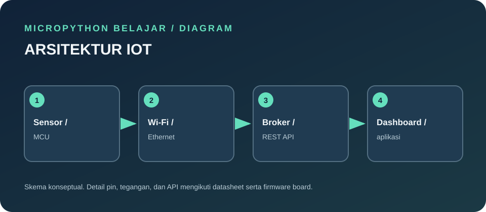

LEVEL AHLI · ARTIKEL 25
Arsitektur aplikasi MicroPython
Proyek yang stabil memisahkan detail hardware dari logika aplikasi. Struktur modular memudahkan pengujian, penggantian board, dan perawatan jangka panjang.

Contoh lapisan aplikasi
src/
├── main.py # entry point
├── config.py # konfigurasi non-rahasia
├── drivers/ # sensor dan aktuator
├── services/ # Wi-Fi, MQTT, storage
├── application/ # logika domain
└── diagnostics.py # logging dan health checkPrinsip pemisahan
- Driver mengetahui cara berkomunikasi dengan hardware.
- Service mengelola koneksi, penyimpanan, atau protokol.
- Application memutuskan apa yang harus dilakukan berdasarkan data.
- Entry point merakit dependency dan mengendalikan lifecycle.
Dependency injection sederhana
class Controller:
def __init__(self, sensor, actuator):
self.sensor = sensor
self.actuator = actuator
def step(self):
value = self.sensor.read()
self.actuator.set(value > 30)Dengan pola ini, logika kontrol dapat diuji menggunakan sensor dan aktuator tiruan sebelum dipasang ke board.
Kontrak modul dan latihan
Tentukan fungsi, tipe nilai, kondisi error, dan kebutuhan hardware. Jangan membuat satu modul mengetahui detail internal semua modul lainnya. Refaktor proyek monitoring sederhana ke dalam driver sensor, service penyimpanan, dan application logic. Pertahankan fungsi utama tetap dapat diuji di komputer.